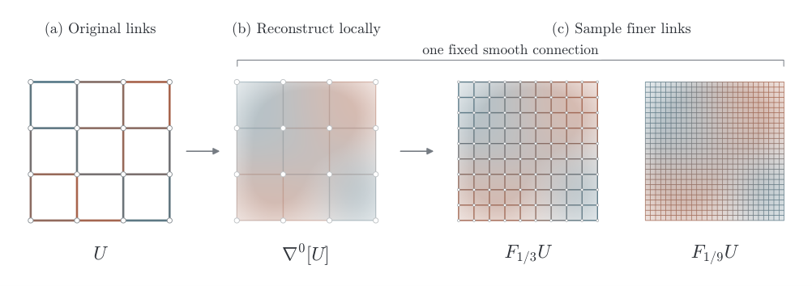

A gauge-invariant measure for lattice chiral fermions
Nonabelian chiral gauge theories, including the Standard Model, have lacked a nonperturbative lattice definition that respects both gauge invariance and chiral symmetry. For overlap fermions, the remaining obstacle is a smooth, local, gauge-invariant fermion measure meeting Lüscher's reconstruction criteria.
Admissible gauge fields are used to reconstruct a smooth SU(5) connection, which is then sampled on successively finer auxiliary lattices. Chiral projectors at adjacent spacings are interpolated, and a finite comparison identity gives contributions to the measure term. For R=10⊕5̄, an exact color-trace cancellation makes these contributions summable into an exponentially local current, and gauge covariance and lattice symmetries are proved directly. The mathematical statements are formalized in Lean 4 as a supplement.

The authors construct a gauge-invariant measure for a class of chiral gauge theories that includes all four global forms of the Standard Model gauge group, giving a candidate nonperturbative lattice definition. All sixteen Lean modules compiled without errors or warnings, and the proofs were replayed in Lean's kernel using only standard axioms.